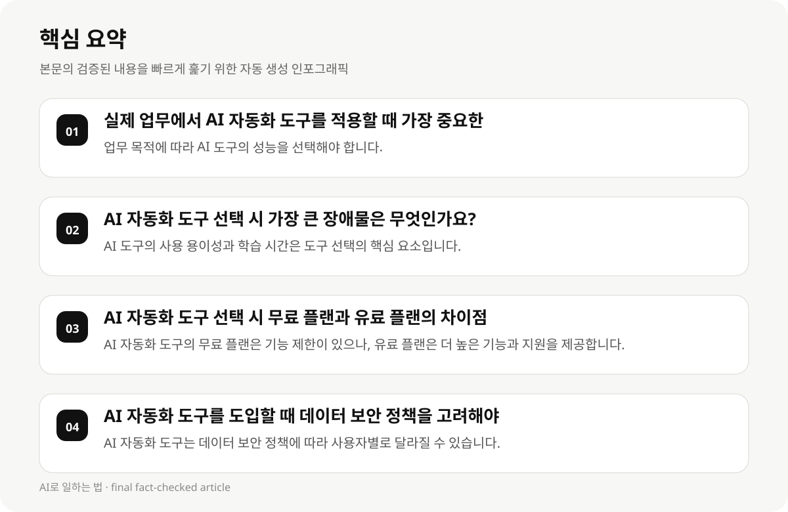

실제 업무에서 AI 자동화 도구를 적용할 때 가장 중요한 고려 요소 #
AI 자동화 도구를 선택할 때는 업무 목적, 기술 수준, 예산, 시간, 그리고 데이터 보안 정책이 가장 중요한 요소입니다. 직장인 및 지식근로자는 AI 도구의 성능, 사용 용이성, 그리고 비용 절감 효과를 고려하여 도구를 선택해야 합니다.
업무 목적에 따라 AI 도구는 다양한 형태로 존재합니다. 예를 들어, 문서 작성, 데이터 분석, 프로세스 최적화 등 다양한 업무 분야에서 활용할 수 있습니다. AI 도구의 사용 용이성과 학습 시간도 고려해야 합니다.
AI 도구의 가격은 유료 플랜과 무료 플랜의 차이가 큽니다. 무료 플랜은 기능 제한이 있으나, 유료 플랜은 더 높은 기능과 지원을 제공합니다. 예산에 따라 도구를 선택하는 것이 중요합니다.
- 업무 목적에 따라 AI 도구의 성능을 선택해야 합니다.
- AI 도구의 사용 용이성과 학습 시간은 도구 선택의 핵심 요소입니다.
- AI 도구의 가격은 유료 플랜과 무료 플랜의 차이가 큽니다.
- 데이터 보안 정책은 AI 도구 선택 시 중요한 고려 요소입니다.
AI 자동화 도구 선택 시 가장 큰 장애물은 무엇인가요? #
AI 자동화 도구를 선택할 때 가장 큰 장애물은 기술 수준, 시간, 그리고 예산입니다. 직장인 및 지식근로자는 기술적으로 어려운 도구를 사용하기 어려울 수 있으며, 시간이 제한적이면 복잡한 도구를 선택하기 어렵습니다.
AI 도구의 사용 용이성과 학습 시간은 도구 선택의 핵심 요소입니다. 사용자가 쉽게 학습하고 적용할 수 있는 도구를 선택하는 것이 중요합니다.
AI 도구의 성능은 업무 목적에 따라 달라질 수 있습니다. 예를 들어, 문서 작성 도구는 단순한 기능을 제공할 수 있지만, 데이터 분석 도구는 복잡한 기능을 요구할 수 있습니다.
- AI 도구의 사용 용이성과 학습 시간은 도구 선택의 핵심 요소입니다.
- AI 도구의 성능은 업무 목적에 따라 달라질 수 있습니다.
- 직장인 및 지식근로자는 기술 수준, 시간, 예산에 따라 도구를 선택해야 합니다.
AI 자동화 도구 선택 시 무료 플랜과 유료 플랜의 차이점 #
AI 자동화 도구의 무료 플랜은 기능 제한이 있으나, 유료 플랜은 더 높은 기능과 지원을 제공합니다. 무료 플랜은 초기 사용 시 기능 제한이 있으나, 유료 플랜은 더 높은 기능과 지원을 제공합니다.
직장인 및 지식근로자는 예산에 따라 무료 플랜과 유료 플랜을 선택해야 합니다. 무료 플랜은 초기 사용 시 기능 제한이 있으나, 유료 플랜은 더 높은 기능과 지원을 제공합니다.
AI 자동화 도구의 무료 플랜은 사용 용이성과 학습 시간을 제한할 수 있으므로, 사용자가 쉽게 학습하고 적용할 수 있는 도구를 선택하는 것이 중요합니다.
- AI 자동화 도구의 무료 플랜은 기능 제한이 있으나, 유료 플랜은 더 높은 기능과 지원을 제공합니다.
- 직장인 및 지식근로자는 예산에 따라 무료 플랜과 유료 플랜을 선택해야 합니다.
- AI 자동화 도구의 무료 플랜은 사용 용이성과 학습 시간을 제한할 수 있으므로, 사용자가 쉽게 학습하고 적용할 수 있는 도구를 선택하는 것이 중요합니다.

AI 자동화 도구를 도입할 때 데이터 보안 정책을 고려해야 하는 이유 #
AI 자동화 도구를 도입할 때는 데이터 보안 정책을 고려해야 합니다. 직장인 및 지식근로자는 데이터 보안 정책에 따라 AI 도구를 선택해야 하며, 데이터 보안 정책은 사용자별로 달라질 수 있습니다.
AI 자동화 도구는 데이터 보안 정책에 따라 사용자별로 달라질 수 있으므로, 데이터 보안 정책을 고려하여 도구를 선택하는 것이 중요합니다.
AI 자동화 도구의 데이터 보안 정책은 사용자별로 달라질 수 있으므로, 사용자가 쉽게 학습하고 적용할 수 있는 도구를 선택하는 것이 중요합니다.
- AI 자동화 도구는 데이터 보안 정책에 따라 사용자별로 달라질 수 있습니다.
- 직장인 및 지식근로자는 데이터 보안 정책에 따라 AI 도구를 선택해야 합니다.
- AI 자동화 도구의 데이터 보안 정책은 사용자별로 달라질 수 있으므로, 사용자가 쉽게 학습하고 적용할 수 있는 도구를 선택하는 것이 중요합니다.
AI 자동화 도구를 실무에 적용할 때의 실행 단계 #
AI 자동화 도구를 실무에 적용할 때는 먼저 도구를 선택하고, 사용자 교육, 기능 설정, 그리고 데이터 보안 정책을 고려해야 합니다.
AI 자동화 도구를 실무에 적용할 때는 사용자 교육이 매우 중요합니다. 사용자가 쉽게 학습하고 적용할 수 있는 도구를 선택해야 하며, 사용자 교육은 도구의 효과를 높이는 핵심 요소입니다.
AI 자동화 도구를 실무에 적용할 때는 기능 설정이 매우 중요합니다. 사용자가 쉽게 학습하고 적용할 수 있는 도구를 선택해야 하며, 기능 설정은 도구의 효과를 높이는 핵심 요소입니다.
- AI 자동화 도구를 실무에 적용할 때는 사용자 교육이 매우 중요합니다.
- AI 자동화 도구를 실무에 적용할 때는 기능 설정이 매우 중요합니다.
- AI 자동화 도구를 실무에 적용할 때는 데이터 보안 정책을 고려해야 합니다.
AI 자동화 도구 선택 시의 실무 적용 전략 #
AI 자동화 도구를 실무에 적용할 때는 업무 목적, 기술 수준, 예산, 시간, 그리고 데이터 보안 정책을 고려해야 합니다.
AI 자동화 도구를 실무에 적용할 때는 사용자 교육이 매우 중요합니다. 사용자가 쉽게 학습하고 적용할 수 있는 도구를 선택해야 하며, 사용자 교육은 도구의 효과를 높이는 핵심 요소입니다.
AI 자동화 도구를 실무에 적용할 때는 기능 설정이 매우 중요합니다. 사용자가 쉽게 학습하고 적용할 수 있는 도구를 선택해야 하며, 기능 설정은 도구의 효과를 높이는 핵심 요소입니다.
- AI 자동화 도구를 실무에 적용할 때는 업무 목적, 기술 수준, 예산, 시간, 그리고 데이터 보안 정책을 고려해야 합니다.
- AI 자동화 도구를 실무에 적용할 때는 사용자 교육이 매우 중요합니다.
- AI 자동화 도구를 실무에 적용할 때는 기능 설정이 매우 중요합니다.
AI 자동화 도구 선택 시의 실무 적용 전략 #
AI 자동화 도구를 실무에 적용할 때는 업무 목적, 기술 수준, 예산, 시간, 그리고 데이터 보안 정책을 고려해야 합니다.
AI 자동화 도구를 실무에 적용할 때는 사용자 교육이 매우 중요합니다. 사용자가 쉽게 학습하고 적용할 수 있는 도구를 선택해야 하며, 사용자 교육은 도구의 효과를 높이는 핵심 요소입니다.
AI 자동화 도구를 실무에 적용할 때는 기능 설정이 매우 중요합니다. 사용자가 쉽게 학습하고 적용할 수 있는 도구를 선택해야 하며, 기능 설정은 도구의 효과를 높이는 핵심 요소입니다.
- AI 자동화 도구를 실무에 적용할 때는 업무 목적, 기술 수준, 예산, 시간, 그리고 데이터 보안 정책을 고려해야 합니다.
- AI 자동화 도구를 실무에 적용할 때는 사용자 교육이 매우 중요합니다.
- AI 자동화 도구를 실무에 적용할 때는 기능 설정이 매우 중요합니다.